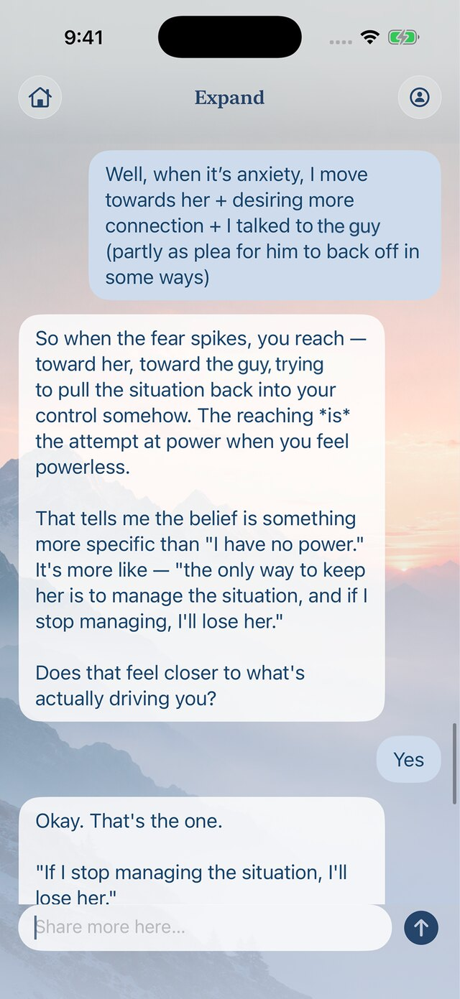
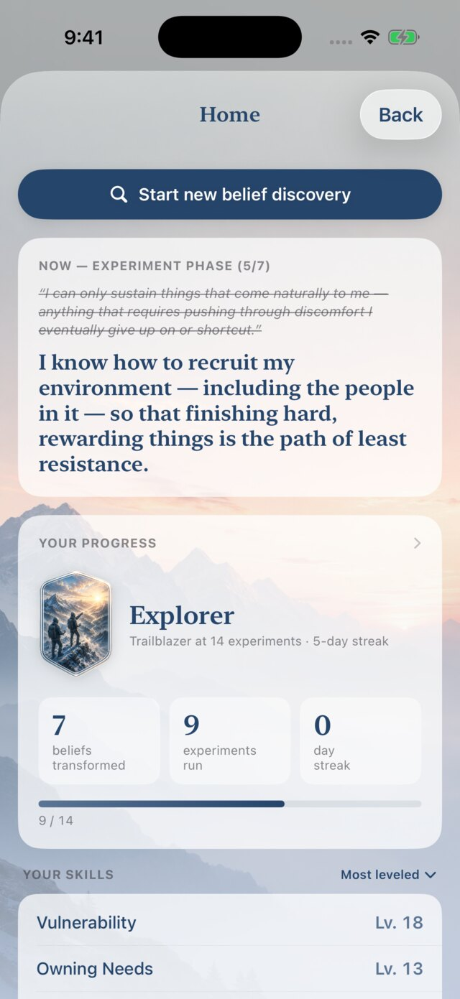
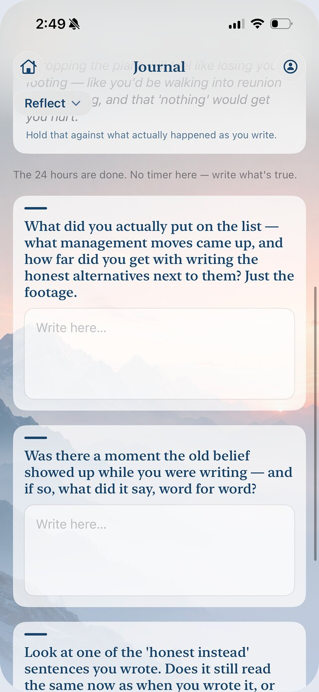
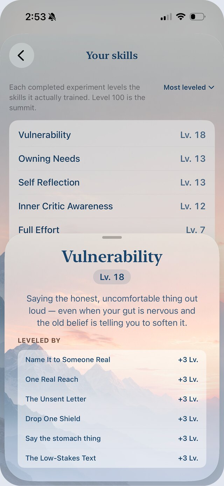
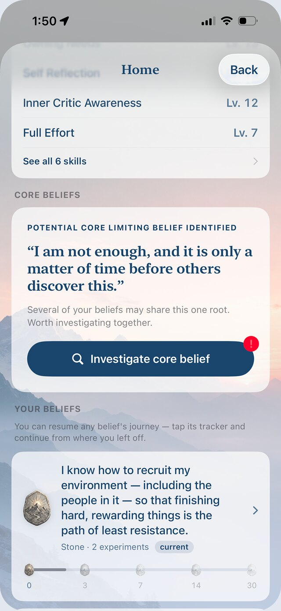
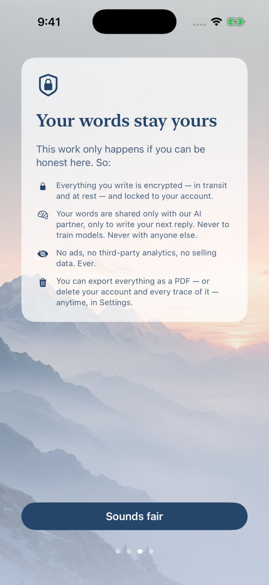

Now on the App Store for iPhone
Expand turns a sentence you've never said out loud into a 24-hour experiment. Reality does the rest.
Free. Start without an account.
Most self-help asks you to repeat a nicer sentence until it sticks. That isn't how minds change. They change when something you were sure would happen doesn't.
Expand is built around that moment. You name what the old belief predicts. You do one small thing that could prove it wrong. Then you look at what actually happened.
The old belief
If I share unfinished work, people will lose respect for me.Sharing work early invites help, not judgment.
The old one made a prediction. The prediction failed. That's the whole method.
How it works
Each belief you bring gets the same treatment. A conversation to find it, a look at the evidence, a rival, and then a test in the real world.




A conversation, not a questionnaire. You bring whatever's bothering you. You leave with one sentence you've probably never said out loud.
List everything that feels like proof. Then take it apart, piece by piece. Fact or interpretation? How old is it? Whose voice was that, originally?
The case against you is usually thinner than it looks.
Write the rival belief. Not an affirmation. Something you could almost believe today. Expand pushes back on moonshots, because a belief that shatters on one lukewarm reply was never worth testing.
Dig up the evidence the old belief made you skip over. It doesn't prove the new belief. It earns it a test.
Three experiments built around your life, each testing the belief from a different angle. One concrete action, doable within 24 hours, with the old belief's prediction written down before you start.
When the window closes, one question comes first: did the limiting prediction come true? Then you rate it again and write what actually happened.
Whatever doubt is left becomes the next experiment.
Every experiment a belief survives moves it up its tracker. Skills like courage and asking for what you need level up with it. After a few beliefs, Expand looks for the one underneath them all.
Before you start
Deciding to do something and deciding when are different things. Every experiment begins with four small commitments.
Name the thing you'd normally do to make it feel safer. The disclaimer. The softening. The over-explaining. For this test, you drop it.
Write what the old belief says will happen, in a form you could actually see. Then rate how likely it feels, 0 to 100. That number is the point. You'll rate it again after.
Tie the action to something that already happens. After lunch. When you close the laptop. The moment does the remembering, not you.
"When I finish lunch tomorrow, I'll share a rough draft in the team channel."Read the plan once and picture the first physical step. Opening the chat. Typing the first line. In the research, that one moment is most of the difference between intending and doing.
One deliberate action,
every day.
That's the whole ask. The belief does the rest of the work by being wrong.
Why it works
Expand isn't therapy and doesn't pretend to be. But the method underneath it is the behavioural experiment: the core technique of cognitive behavioural therapy, and one of the most studied ideas in psychology. Three findings shaped the app.
Talking yourself out of a belief rarely holds. Watching its prediction fail does. Every Expand experiment is built so the old belief has to make a call, and reality gets to answer.
Bennett-Levy and colleagues, Oxford Guide to Behavioural Experiments in Cognitive Therapy, 2004.
How much you learn depends on the distance between what you expected and what happened. That's why you rate the prediction before and after, and why Expand designs for surprise rather than difficulty.
Craske and colleagues on inhibitory learning and expectancy violation, Behaviour Research and Therapy, 2014.
People who set a specific cue for an action follow through far more often than people who merely intend to. The setup screen exists because of this.
Gollwitzer and Sheeran, meta-analysis of 94 studies on implementation intentions, 2006.
The research is about the method. Expand is a personal-growth tool that uses it. It doesn't treat, diagnose, or heal anything, and it isn't a substitute for a therapist.
Progress you can see
Seven ranks, earned by experiments run and days shown up in a row. Each belief has its own tracker, from Stone to Platinum. And the skills an experiment actually trained level up alongside it.
When an experiment ends, Expand names the skills it trained. Vulnerability. Owning your needs. Full effort. Each one has a short description of what it actually means, and a ledger of the experiments that built it.
After you've worked a few beliefs, Expand checks whether one deeper belief sits underneath them all, and offers to help you look at it directly.

Privacy
This only works if you can be honest inside it. So the rules are short.

Give it 24 hours.
Free. iPhone, iOS 17 or later.